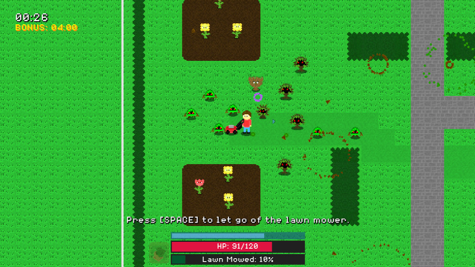

This is a game that I worked on over the course of a year with
some friends of mine, namely gldeA, Bridget Wu, and Tarin.
gldeA helped me with the programming during the summer of 2025
(when the project was first started) but eventually had to step
away from development, Bridget helped me with some art and
Tarin made the music for me. I greatly appreciate all of them
for volunteering and helping me make this game. I did a good
amount of the programming and art for the game.
The game is made with GDScript in the Godot Game Engine.
Overall, the experience making this game was a lot of fun, I
liked coming up with new ideas and implementing the various
features one by one and watching the game grow into something
that I think we all can be very proud of.
The basic idea behind this game is that you are a kid that wants
to get the latest game console that released (the "Swapdeck 2.0")
but your parents won't get it for you. Therefore, you must earn
the cash yourself by mowing your neighbor's lawn. However, the
lawns are far from safe - there are enemies and hazards that you
must avoid or defeat. The game turns into a bullet hell after
a while so that's a lot of fun.
Game thumbnail by "Song" (my aunt, who is a graphic designer,
huge thank you to her for helping out with that!)
You can find the source code
here.
Controls:
- W,A,S,D to move
- [SPACE] to interact
- Left Mouse Button - shoot
- Tab - toggle journal
Download/Play on itch.io
Download on Steam